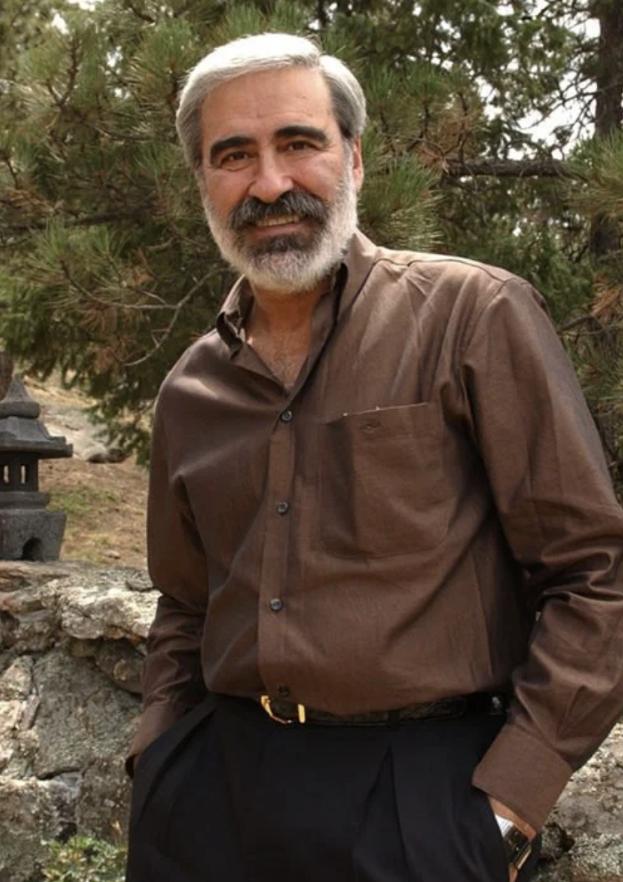

Dr. David Schnarch (1946-2020) was a clinical psychologist and couples therapist. He spent four decades arguing that marriage is for growth, not comfort, and that sex in a long relationship is a window into how solid you are.
The Question He Kept Asking
A lot of his contemporaries taught communication skills and conflict resolution. Schnarch wanted to know why some couples grow and others go still, even when they have the same tools.
His answer was differentiation: staying yourself while staying close. That became the center of the Crucible Approach.
How the Approach Got Its Name
He built it in the room, with couples in sexual trouble, affairs, dead talk, and the slow fade that hits a lot of long marriages.
The couples who changed were not the ones with fewer problems or better scripts. They were the ones willing to become more of themselves, even when that made the week harder.
A crucible is a pot that can take heat so metal can be refined. He used that for committed relationships: the pressure is what refines you, if you will stay in it.
What He Claimed
Marriage as a people-growing machine
Conventional wisdom says a good relationship should mainly make you feel safe. Schnarch said marriage is designed to grow you. The hard parts are not bugs; they are how you get more mature, more honest, and more differentiated.
The Four Points of Balance
He named four capacities that make differentiation usable:
- Solid Flexible Self. Clear values and identity, still able to learn.
- Quiet Mind-Calm Heart. Self-soothing when the heat is on.
- Grounded Responding. Conduct from your values, not from panic or temper.
- Meaningful Endurance. Staying long enough for the heat to change you.
Self-validated intimacy
Self-validated intimacy means sharing yourself without needing their approval to survive the sharing. The opposite is other-validated intimacy: you only show what they already like.
Eyes-open sex
He argued that sexual intimacy means being willing to be seen, which most people find terrifying. Eyes-open sex is not a trick about eye contact. It is staying present enough to be known in the act.
Books
- Passionate Marriage (1997). The book that put differentiation-based couples therapy in front of a general audience.
- Intimacy & Desire (2009). Why desire problems in long relationships are normal, and how they can force growth.
- Brain Talk (2018). His last book, tying clinical observation to how close relationships shape the brain.
The Four Points Workbook
For people who want exercises, he wrote the Crucible 4 Points of Balance Workbook, with work on each point.
What Lasted
He died in October 2020, and the work is still used because it does a few things other couples models often do not:
- It aims at growth, not only at managing the fight.
- It treats difficulty as normal, not as proof of failure.
- It asks what is being asked of you, not only what your partner should do differently.
- It treats sex as part of the same picture, not a separate specialty.
Official Training
This site is an independent guide; for official resources, visit Crucible 4 Points or ICTEC.
The Bet He Made
Schnarch argued that marriage is a people-growing machine, not a comfort delivery system. Differentiation was the name he gave to staying yourself in that heat. He did not promise easier relationships; he promised that the difficulty could be used.